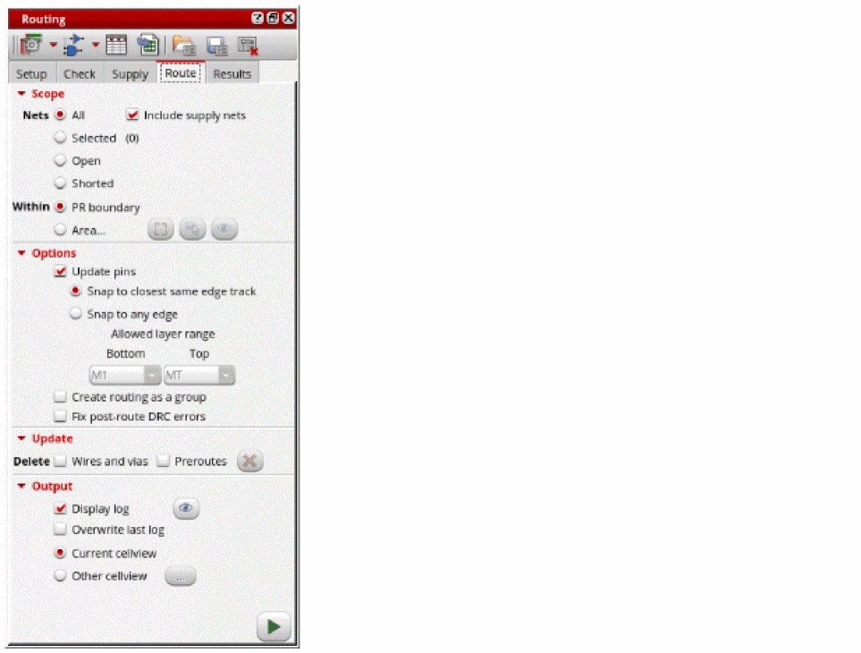
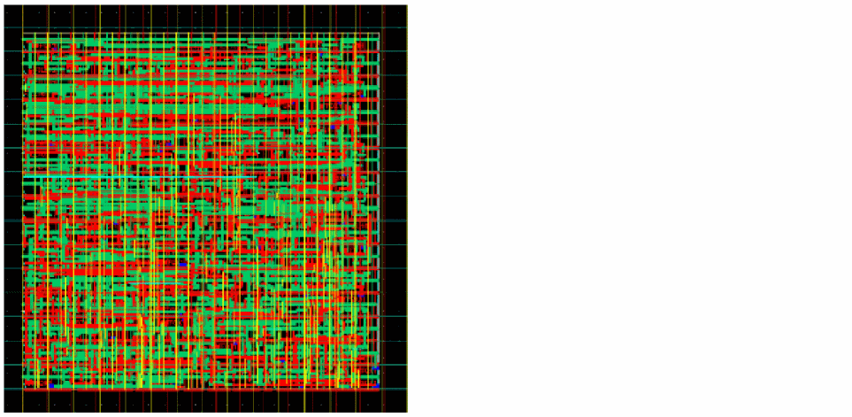
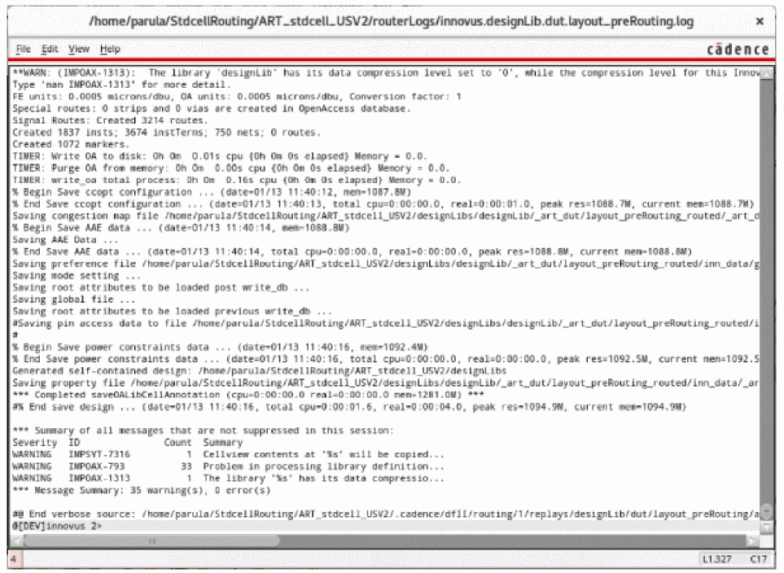

Running Signal Routing for Standard Cells
- Open a design in Layout MXL.
-
Choose Window – Assistants – Routing.
Alternatively, right-click anywhere on the layout window menu bar and choose Assistants – Routing. -
In the Routing assistant, click the Route tab.
 - Click Selected to define the scope of nets to route. You can also select to route All, Open, or Shorted nets.
-
Select Include Supply Nets to route the
tieHiandtieLonets. - Deselect the Update Pins option. This option should be enabled only if WSPs are not used.
-
Click Run signal route
 at the lower-right corner of the Route tab.
at the lower-right corner of the Route tab.
The selected nets are routed.
While the router is running, the Run signal route button changes to a Stop button. A directory calledrouterLogsis created in the run directory.
Routing errors are reported in the CIW, which might be hidden underneath other windows. The CIW can be raised automatically by setting the following environment variable:envSetVal("ui" "raiseCIWonError" 'boolean t)
- In the Update section of the Route tab, select the Delete Wires and vias.
-
Click the Delete button to delete the routed wires and vias for the selected nets.
The routed data is deleted.
Related Topics
Configuring Standard Cell Router Settings
Generating Width Spacing Patterns for Standard Cell Routing
Checking Layout Routability after Running Standard Cell Placer
Viewing and Analyzing Standard Cell Routing Results
Routing Assistant User Interface for Standard Cell
Return to top